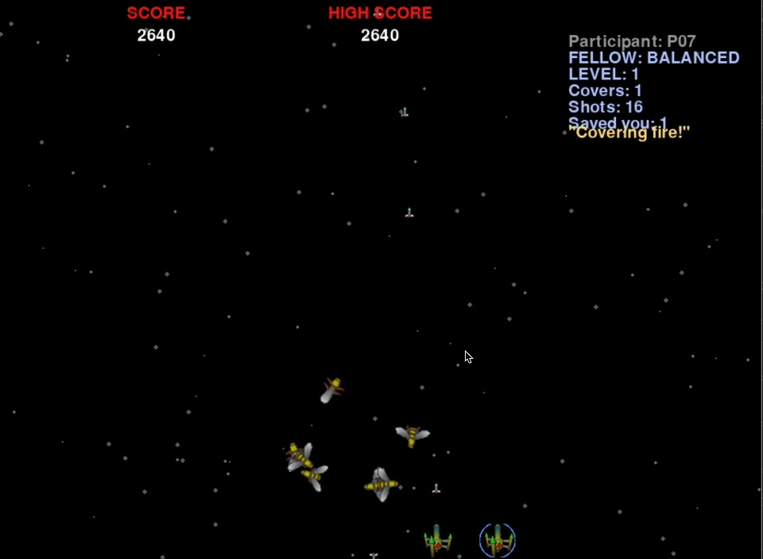

01 / UNDERSTAND TOGETHER
Ground the conversation.
Connect what a person says to the objects, context and activity they are referring to.
JIANXUAN SHAO / PERSONAL AI · SPATIAL INTERACTION
ARCHITECTURE → IMMERSIVE MEDIA → HCI
Explore selected workI want to explore personal AI that understands an ongoing activity, thinks through choices with us, and helps turn our decisions into actions we can revise.
01 / SELECTED WORK

A working Python/Pygame companion prototype for following, protection and coordinated support during play.
2025–ONGOING · PROTOTYPE & STUDY PREPARATION
Industry experience with lighting, projection and the delivery of an immersive spatial environment at Fengyuzhu.
2023 · INDUSTRY CONTRIBUTION / FENGYUZHU02 / RESEARCH DIRECTION
A DIRECTION TO INVESTIGATE
An assistant should be able to talk with us while we are doing something, understand what we are looking at and working on, compare possible next steps, and help carry out a decision.
My interest is in the continuity of that collaboration: how an AI and a person maintain a shared understanding of an activity, revise it together, and gradually learn how to work with each other.
Natural conversation is one part of this direction. I am also interested in connecting the conversation to the surrounding environment and to digital actions that the person can inspect, correct or undo.
My architecture and immersive-media experience gives me a starting point in spatial design and creative making. These are possible settings to explore, while the first task and study design remain preliminary.
01 / UNDERSTAND TOGETHER
Connect what a person says to the objects, context and activity they are referring to.
02 / THINK & ACT TOGETHER
Compare alternatives and connect an agreed decision to an action the person can review and reverse.
03 / CONTINUE TOGETHER
Investigate how shared context and preferences should develop across repeated interactions.
03 / BACKGROUND
I’m a Master of Computer Science student at the University of Sydney, with a focus on Data Science and AI, with expected completion in December 2026.
I previously studied architecture at Hebei University and worked as an interactive media intern at Fengyuzhu. My experience spans spatial design, immersive exhibition systems and interactive prototypes.
Alongside Game Fellows, my current capstone work involves research framing, model comparison and error analysis for an explainable AI-generated image detector. I want to bring this technical evaluation experience into the design and study of human–AI collaboration.
My current preparation is in desktop and browser prototyping. Wearable integration and real-time multimodal interaction are skills I would develop during doctoral research.
04 / APPLICATION MATERIALS
CV and preliminary research interests for doctoral study.